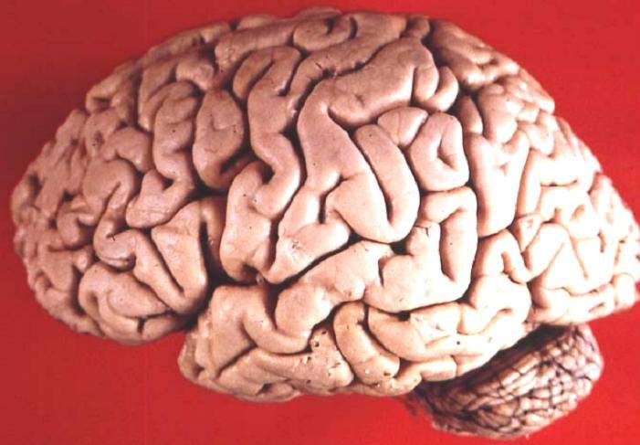
John A Beal, PhD Dep't. of Cellular Biology & Anatomy, Louisiana State University Health S… · CC BY 2.5 · fuentelateral-foto-beal.jpg
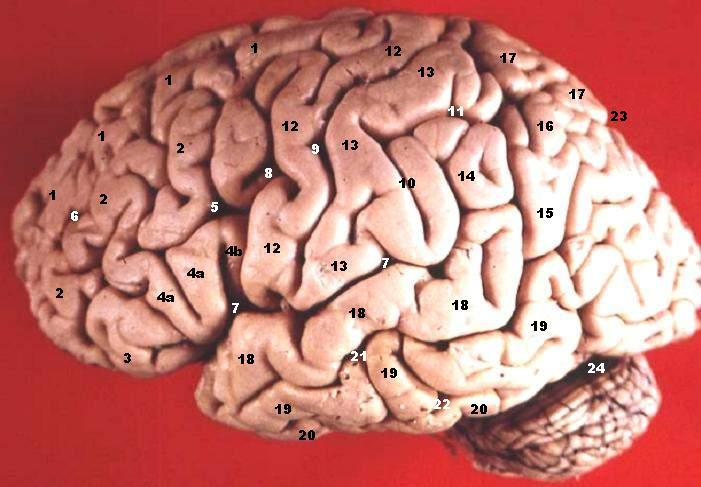
John A Beal, PhD Dep't. of Cellular Biology & Anatomy, Louisiana State University Health S… · CC BY 2.5 · fuentelateral-foto-rotulada-beal.jpg
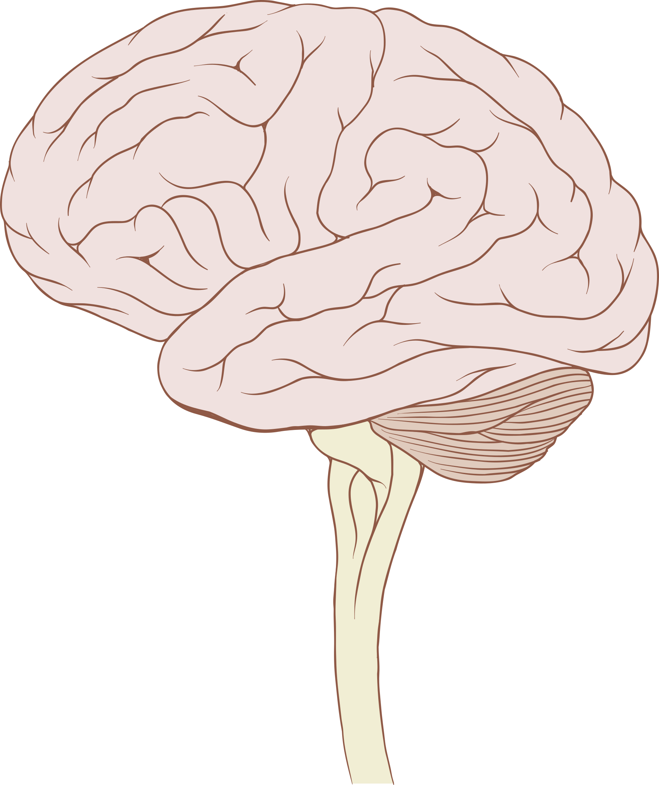
Patrick J. Lynch, medical illustrator · CC BY 2.5 · fuentelateral-lynch.png
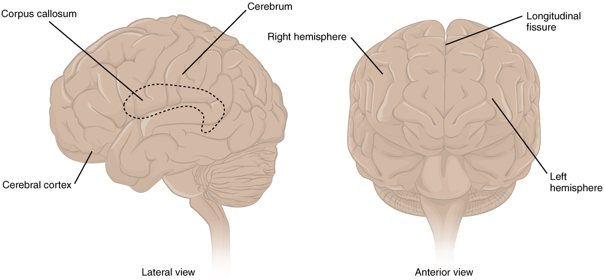
OpenStax · CC BY 4.0 · fuentelateral-openstax.jpg
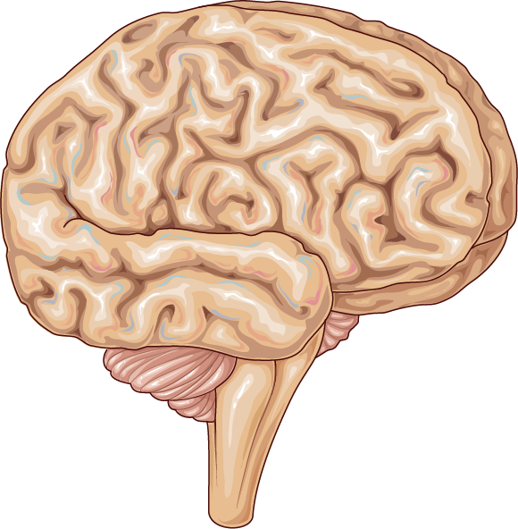
Laboratoires Servier · CC BY-SA 3.0 · fuentelateral-servier.png
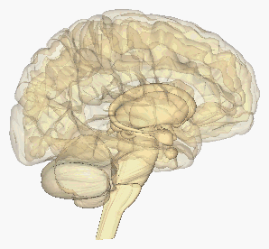
lifesciencedb · CC BY-SA 2.1 jp · fuentelateral-transparente-bodyparts3d.png
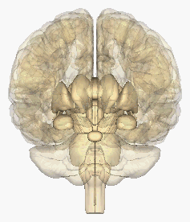
lifesciencedb · CC BY-SA 2.1 jp · fuenteanterior-transparente-bodyparts3d.png
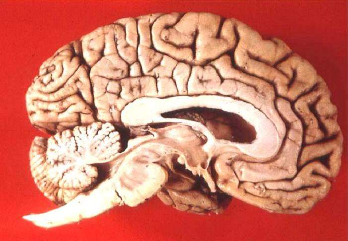
John A Beal, PhD Dep't. of Cellular Biology & Anatomy, Louisiana State University Health S… · CC BY 2.5 · fuentemedial-foto-beal.jpg
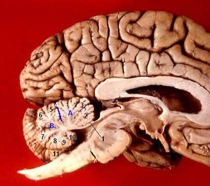
John A Beal, PhD Dep't. of Cellular Biology & Anatomy, Louisiana State University Health S… · CC BY 2.5 · fuentemedial-foto-rotulada-beal.jpg
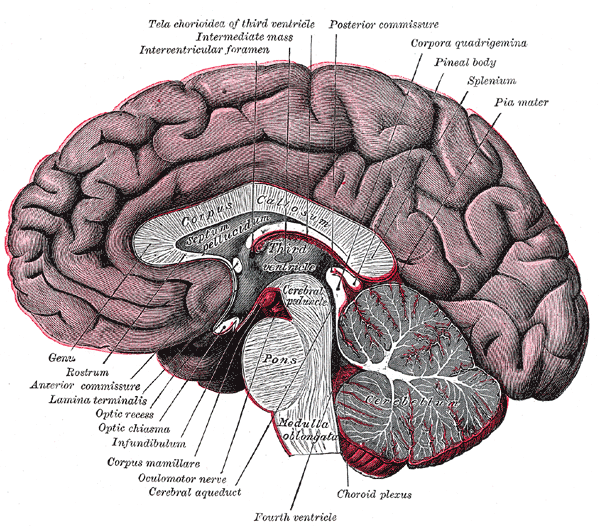
Henry Vandyke Carter · Public domain · fuentemedial-gray720.png

Henry Vandyke Carter · Public domain · fuentemedial-gray715.png
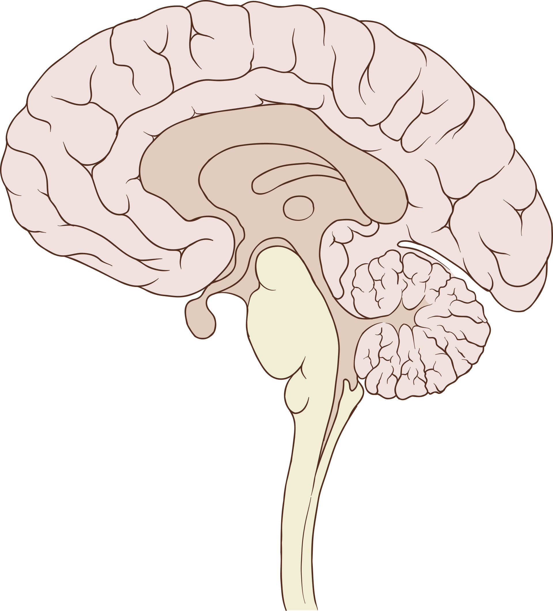
Patrick J. Lynch, medical illustrator · CC BY 2.5 · fuentemedial-lynch.png
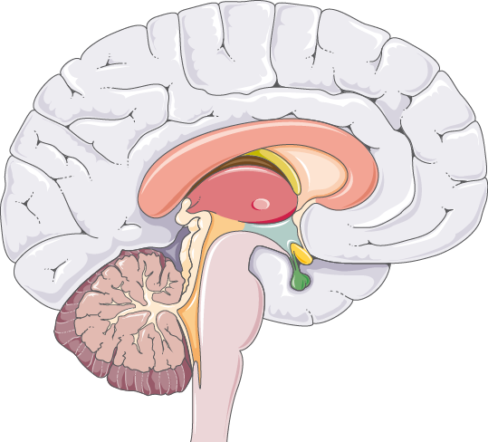
Laboratoires Servier · CC BY-SA 3.0 · fuentemedial-servier.png
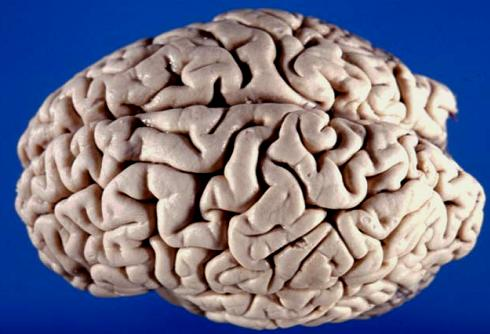
John A Beal, PhD Dep't. of Cellular Biology & Anatomy, Louisiana State University Health S… · CC BY 2.5 · fuentesuperior-lateral-foto-beal.jpg
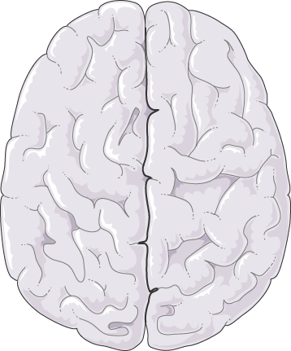
Laboratoires Servier · CC BY-SA 3.0 · fuentesuperior-servier.png
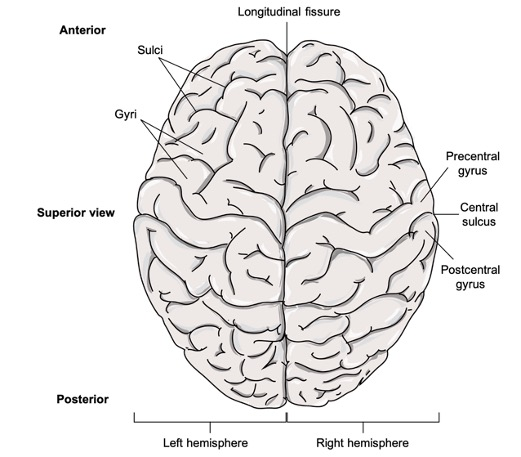
Original: DanielDonnellyButte Derivative work: Chiara Mazzasette · CC BY 4.0 · fuentesuperior-openstax-like.jpg
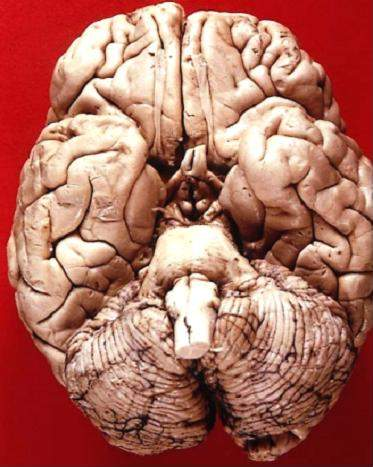
John A Beal, PhD Dep't. of Cellular Biology & Anatomy, Louisiana State University Health S… · CC BY 2.5 · fuenteinferior-foto-beal.jpg
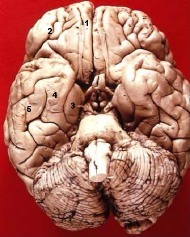
John A Beal, PhD Dep't. of Cellular Biology & Anatomy, Louisiana State University Health S… · CC BY 2.5 · fuenteinferior-foto-rotulada-beal.jpg
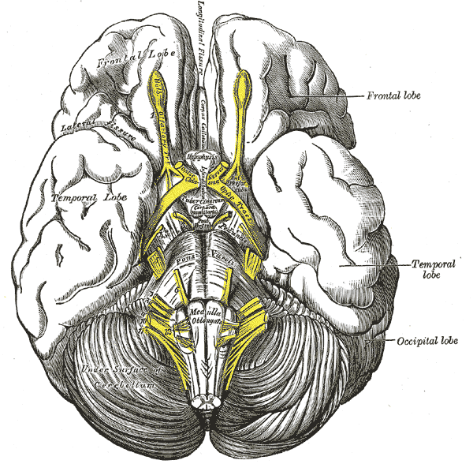
Henry Vandyke Carter · Public domain · fuenteinferior-gray724.png
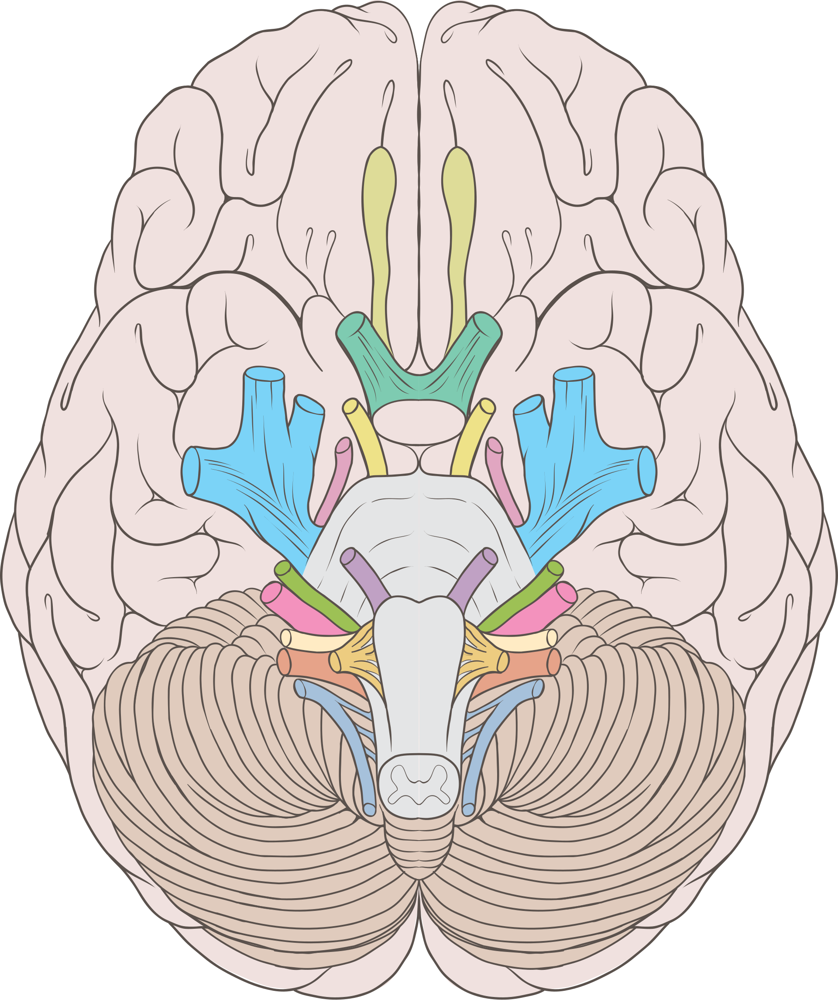
Patrick J. Lynch, medical illustrator · CC BY 2.5 · fuenteinferior-lynch.png
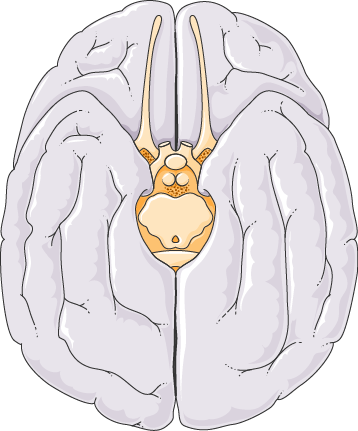
Laboratoires Servier · CC BY-SA 3.0 · fuenteinferior-servier.png
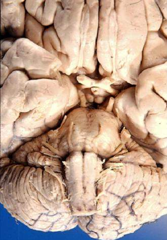
John A Beal, PhD Dep't. of Cellular Biology & Anatomy, Louisiana State University Health S… · CC BY 2.5 · fuenteanterior-inferior-foto-beal.jpg
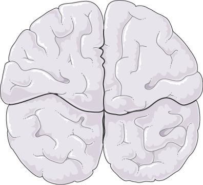
Laboratoires Servier · CC BY-SA 3.0 · fuenteposterior-servier.png
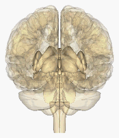
lifesciencedb · CC BY-SA 2.1 jp · fuenteposterior-transparente-bodyparts3d.png
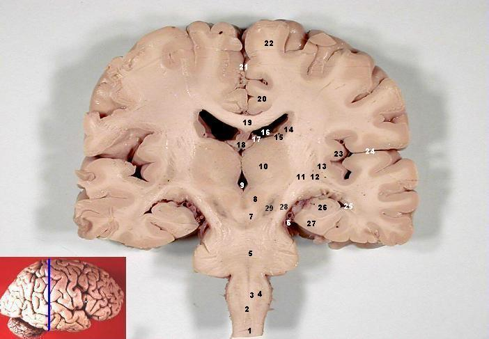
John A Beal, PhD Dep't. of Cellular Biology & Anatomy, Louisiana State University Health S… · CC BY 2.5 · fuentecoronal-foto-beal.jpg
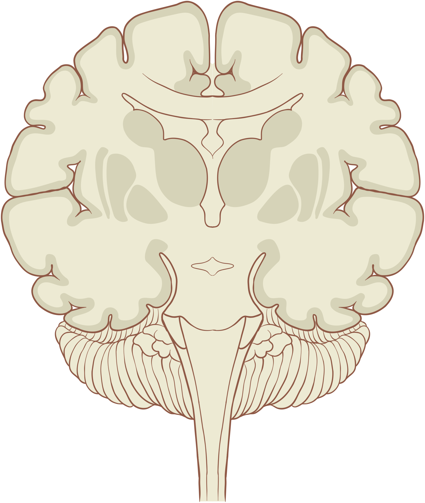
Patrick J. Lynch, medical illustrator · CC BY 2.5 · fuentecoronal-lynch.png
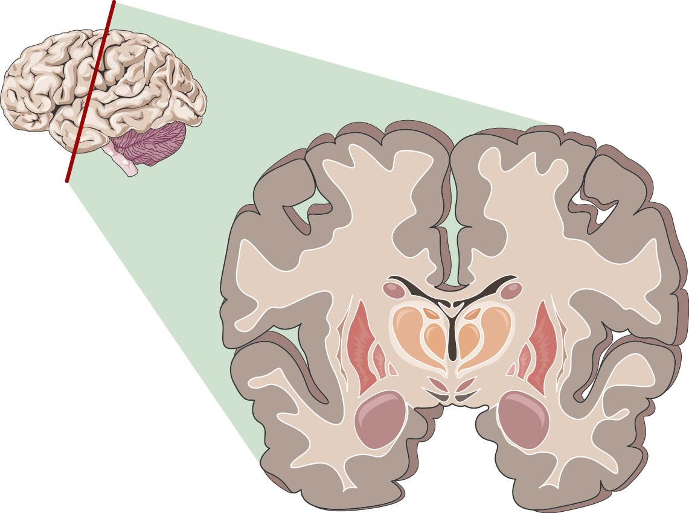
Laboratoires Servier · CC BY-SA 3.0 · fuentecoronal-servier.png


_section_description_2.JPG){kind=link}